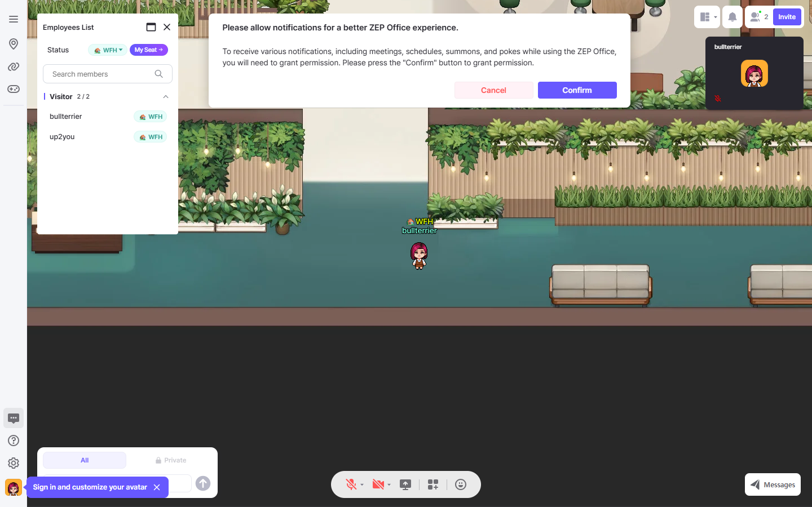

ตรวจเมื่อ 18 ตุลาคม 2026 · เป้าหมาย zep.us/play/GpXAaQ · REA + เอกสารทางการ
FinGW: สร้างแอปแบบนี้ได้ไหม?
สร้างประสบการณ์และฟังก์ชันลักษณะเดียวกันได้ หลักฐานชี้ว่าเป็นพื้นที่สำนักงานบน ZEP พร้อมแอป Office ที่ใช้ HTML widget การสร้างบน ZEP ใช้ความสามารถของแพลตฟอร์มได้มาก ส่วนการสร้างเว็บอิสระต้องพัฒนาระบบเกมและการสื่อสารเพิ่ม การตรวจนี้ยังไม่ใช่แอปที่สร้างเสร็จ และยังยืนยันการทำซ้ำทุกฟังก์ชันแบบ 1:1 ไม่ได้

ภาพจริงจาก REA: แผนที่สำนักงาน อวาตาร์ Employees List สถานะ WFH และแถบสื่อสาร · E1
สิ่งที่ตรวจพบ และระดับหลักฐาน
| ส่วนประกอบ | หลักฐานที่พบ | ขอบเขตข้อสรุป |
|---|
| สำนักงาน 2D และอวาตาร์ | เปิดพื้นที่ได้ในเบราว์เซอร์แบบ guest เห็นเฟอร์นิเจอร์ อวาตาร์ และชื่อ FinGW; DOM มี Canvas · E1 | ยืนยันการแสดงผล ไม่ได้ทดสอบ collision และทุกพื้นที่ |
| รายชื่อสมาชิก / WFH / My Seat | เห็นแผง Employees List บนหน้าจอ และ iframe ของ members.html · E1 | ยืนยันหน้าจอที่ปรากฏ |
| ค้นหาและสถานะเพิ่มเติม | โค้ด widget มีตัวกรองชื่อ และสถานะ WFH, office, away, focus, lunch, vacation, lounge, meeting ฯลฯ · E3 | ยืนยันว่ามีโค้ดรองรับ ไม่ได้ทดสอบการบันทึกสถานะทั้งหมด |
| กลับที่นั่ง / ไปหาผู้เล่น / เรียกผู้เล่น / ข้อความส่วนตัว / โปรไฟล์ | พบ message types myseat, moveToPlayer, summonPlayer, requestDirectMessage, requestShowProfile · E3 | เป็นคำสั่งที่ widget ส่งไปยัง parent ผ่าน postMessage ยังไม่ยืนยันผลปลายทางหรือสิทธิ์ที่ต้องใช้ |
| ไมค์ กล้อง แชร์หน้าจอ แชต | พบปุ่มบนหน้าจอ และ WebSocket ไปยัง LiveKit กับ game server · E1 | ยืนยัน UI และการเชื่อมต่อ ไม่ได้โทร ส่งข้อความ หรือแชร์หน้าจอจริง |
| โครงสร้างเว็บ | พบ Next.js chunks, Canvas, map background/foreground requests และ HTML widget iframe · E1 | ยืนยันโครงสร้างที่ browser โหลด ไม่ทราบซอร์สและการออกแบบ backend ทั้งหมด |
| การเดิน | REA ส่ง ArrowUp และ ArrowRight สำเร็จ · E2 | ภาพที่จับทันทีไม่เพียงพอยืนยันระยะการเคลื่อนที่และการซิงก์กับผู้เล่นอื่น |
แนวทางสร้าง
| ทางเลือก | งานที่ต้องทำ | เหมาะเมื่อ |
|---|
| สร้างบน ZEP | สร้างแผนที่ของเรา ตั้งค่า Office/พื้นที่ประชุม และเขียน ZEP Script + HTML widgets เฉพาะส่วนที่ต้องเพิ่ม ใช้ระบบ avatar, multiplayer และการสื่อสารของแพลตฟอร์ม | ต้องการใช้งานออฟฟิศเสมือนโดยลดงานสร้างโครงสร้างพื้นฐาน ต้องมี Space และสิทธิ์แก้ไข พร้อมตรวจเงื่อนไขฟีเจอร์ของบัญชี |
| สร้างเว็บของเราเอง | ข้อเสนอออกแบบ: React สำหรับ UI; Phaser หรือ PixiJS สำหรับฉาก 2D; game server ผ่าน WebSocket; WebRTC/LiveKit สำหรับเสียง วิดีโอ และแชร์หน้าจอ; backend/ฐานข้อมูลสำหรับสมาชิก สถานะ และที่นั่ง | ต้องการควบคุม UI ข้อมูล และระบบทั้งหมด โดยยอมรับงานพัฒนา ดูแลเซิร์ฟเวอร์ และทดสอบระบบหลายผู้ใช้เพิ่ม |
รายการเทคโนโลยีสำหรับเว็บอิสระเป็นข้อเสนอของผู้วิเคราะห์ ไม่ใช่ข้อสรุปว่า FinGW ใช้ชุดเดียวกันทั้งหมด เอกสาร ZEP ยืนยันความสามารถด้าน widgets, ผู้เล่น, events และ HTTP APIs: API Summary, ScriptApp methods ส่วนความสามารถ Office อธิบายไว้ใน คู่มือ ZEP Office
ขอบเขตเวอร์ชันแรกที่เสนอ
- แผนที่สำนักงานหนึ่งแห่ง อวาตาร์ ชื่อผู้ใช้ และขอบเขตเดินชน
- ผู้เล่นหลายคน เห็นตำแหน่งร่วมกัน รายชื่อสมาชิก และสถานะ WFH / office / away / focus
- แชต ที่นั่งประจำ และพื้นที่ประชุม
- เพิ่มไมค์ กล้อง แชร์หน้าจอ และการเชื่อมระบบบริษัทตามความต้องการจริง
สำหรับเว็บอิสระ ควรพิสูจน์การซิงก์ตำแหน่งและการประชุมพร้อมกันตั้งแต่ต้น ก่อนขยายจำนวนผู้ใช้ ยังไม่ควรระบุระยะเวลาหรืองบประมาณตายตัวจนทราบจำนวนผู้ใช้พร้อมกัน ฟีเจอร์จำเป็น เป้าหมายมือถือ และเส้นทาง ZEP หรือเว็บอิสระ
สิ่งที่ยังไม่ทราบ
- โค้ด script ฝั่ง ZEP ของแอปเป้าหมาย ฐานข้อมูล การยืนยันตัวตน และกติกาสิทธิ์ฝั่ง server
- ผลการใช้ My Seat, summon, direct message, การเปลี่ยนสถานะ และการประชุมจริง ไม่ได้เรียกคำสั่งที่กระทบผู้ใช้อื่น
- ความจุผู้ใช้พร้อมกัน ประสิทธิภาพ และความเข้ากันได้บนมือถือ
- สิทธิ์นำแผนที่ รูป และโค้ดต้นฉบับมาใช้ซ้ำ การสร้างใหม่ควรใช้ asset ของเราเองหรือที่มีสิทธิ์ใช้ การเห็นไฟล์ที่ browser โหลดไม่เท่ากับมีสิทธิ์ใช้ซ้ำ
ระบบตรวจอนุมัติอัตโนมัติปฏิเสธการเก็บ response bodies ของเครือข่ายทั้งหมด เนื่องจากอาจรวมข้อมูลผู้ใช้หรือเซสชัน การประเมินจึงใช้ภาพหน้าจอ DOM ข้อมูลการเชื่อมต่อ และ DOM ของ widget สาธารณะที่ระบุเจาะจง ไม่มีการเก็บ response bodies แบบครอบคลุม
หลักฐานสำหรับตรวจต่อ
สรุปหลักฐาน REA · DOM และสคริปต์ของ widget สาธารณะ (ไฟล์ข้อความ) · ภาพหน้าจอ
ไฟล์สรุปเป็นข้อมูลที่คัดเลือกจาก REA ไม่ใช่ bundle ต้นฉบับครบชุด ตัด payloads และข้อมูลเซสชันที่ไม่จำเป็นออก เก็บ Evidence IDs เพื่ออ้างอิงผลต้นฉบับภายในเซสชันนี้
E1: ev_63182fc49da7f6c978e49fcf5934a7c74c12f9e90cb243ebf510cda75ab1d14d
E2: ev_513eddd11efaacd8b14ca613c5dab2551f63495b12c02ee0856f6d8237e01816
E3: ev_13525b9c2e2ec71e0ec62ea3ccc445fec1a4d84bcf8af1e7cfd2ce0daba7acc3
ทั้งสามรายการเป็น capture_browser_scenario / controlled-replay โดย REA เปิด Chrome ชั่วคราวและรายงาน terminated-owned-process หลังจบ E3 แสดง widget โดยไม่มีข้อมูล init จาก parent จึงใช้ตรวจโครงสร้างโค้ด ไม่ใช่สถานะสมาชิกจริง
เอกสารประกอบเพิ่มเติม: การติดตั้งสคริปต์, การจัดเก็บข้อมูลและข้อควรระวังเมื่อใช้หลายแผนที่